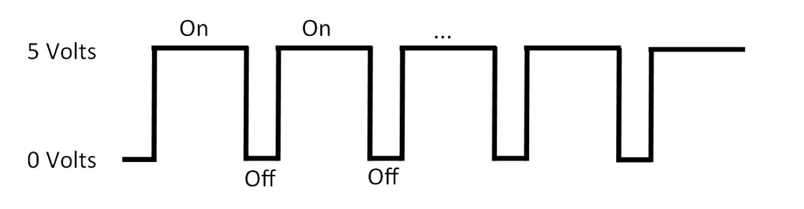
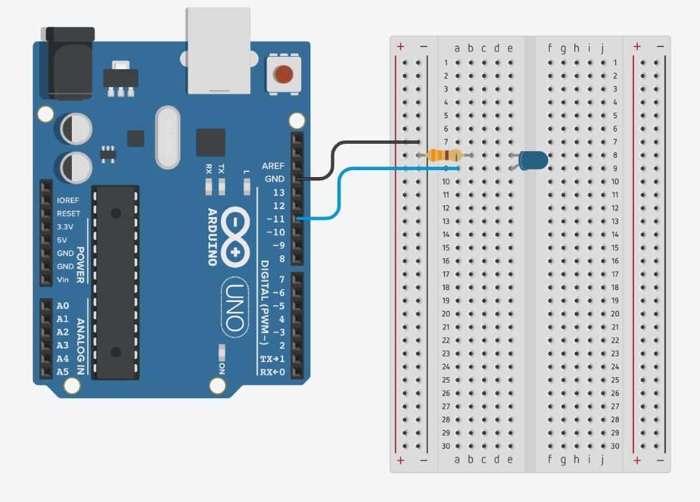
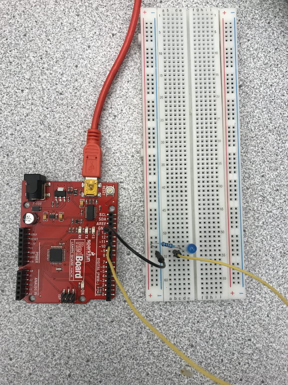

How To Use PWM
So far, you have turned on and blinked LEDs, but you might be wondering, “how do I make the LED dimmer?” An Arduino can’t change the amount of voltage that comes out of a pin, so it instead uses a concept called PWM (Pulse Width Modulation). PWM is where the Arduino rapidly turns on and off the power for specific intervals of time. For example, it might be on for 75% of the time and off for 25% of the time. This would give the illusion that the LED is dimmer when it is really fully on for 75% of the time.

On the Arduino, only specific pins can use PWM. These are the digital pins with the ~ symbol next to them, usually 3, 5, 6, 9, 10, and 11. Analog pins cannot use PWM since analog pins are used for input devices only.
The analogWrite Function
The analogWrite function is the function that will enable you to use PWM on the Arduino. The “level” number represents the amount of time that power is coming through the pin (as a fraction, out of 255).
analogWrite(pin #, level);
For example, if you set the level to 100, power would be coming through the pin for 100/255 (39%) of the time. If you set the level to 255, the power would be on for 255/255 (100%) of the time.
Activity 1: Using PWM
Supplies Needed:


For this activity, we will be using PWM to make an LED appear dimmer. First, connect the LED to the pin 11 on the Arduino with the resistor like the photo below:
 
Next, type the following code into the Arduino IDE and click upload:
int ledPin = 11;
void setup(){
pinMode(ledPin, OUTPUT);
}
void loop(){
analogWrite(ledPin, 100);
delay(750);
analogWrite(ledPin, 255);
delay(750);
}
Challenge
Now that you know how to use PWM, connect a potentiometer and an LED to the Arduino. Write a program that will make the LED dimmer or brighter depending on how far the potentiometer is turned.
(HINT: The output from the analogRead function is a value between 0 and 1023 and the input for analogWrite must be between 0 and 255. You will need to convert the value from the potentiometer to a value between 0 and 255.)